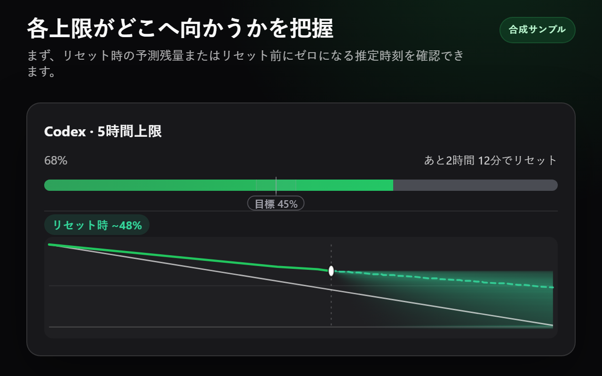
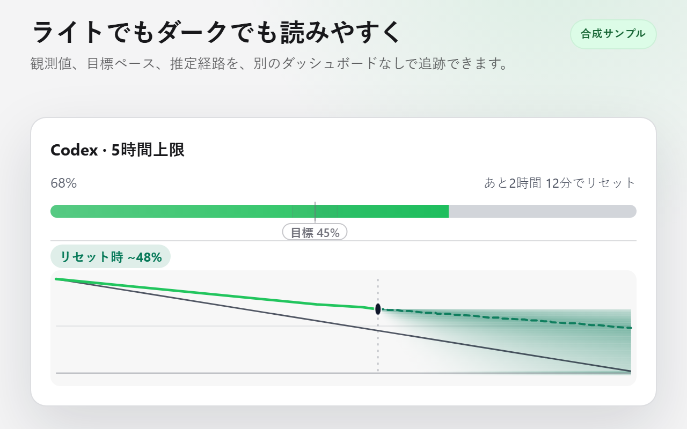
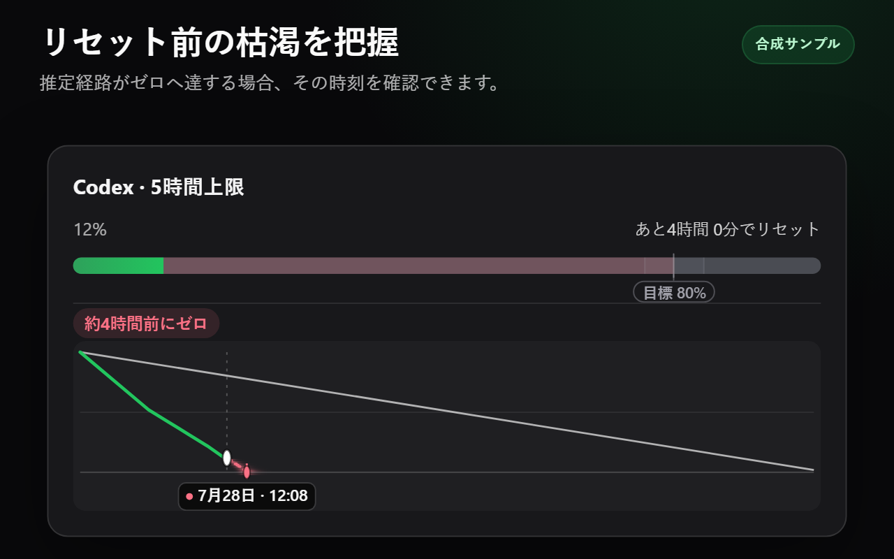
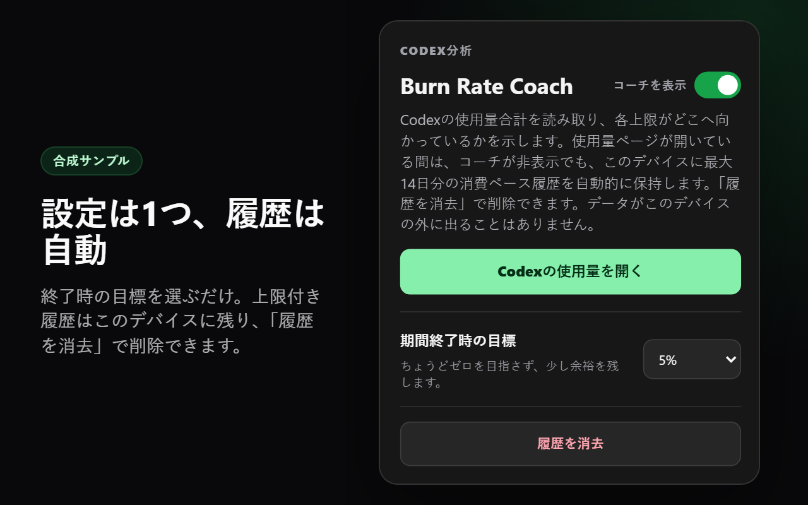

結果を最初に
各メーターは、リセット時の推定残量またはゼロへ達する可能性のある時刻を個別に表示します。あるカードが別のカードに優先することはありません。
Burn Rate Coachは、対応するCodex使用量カードごとに、予測結果を1つとコンパクトなローカル軌跡を追加します。

別のダッシュボードを開かずに、リセット時の予測残量またはリセット前にゼロになる推定時刻を確認できます。
各メーターは、リセット時の推定残量またはゼロへ達する可能性のある時刻を個別に表示します。あるカードが別のカードに優先することはありません。
観測済みの使用量が予測を決めます。目標は控えめな基準であり、固定された範囲に対する経路の色分けだけに使用します。
期間終了時の目標を選びます。最大14日分の履歴は自動的に保存され、このデバイスだけに残り、ポップアップから消去できます。
これらの画像は、実際の構造を忠実に再現した非公開のフィクスチャに対して、製品版の拡張機能コードを実行して作成しています。アカウントデータは含まれません。




Codex Analyticsが開かれている間、Burn Rate Coachは、ページが正常にデコードしたクォータ結果をページ自身が読み取るときに受動的に観測します。予測に必要な安定したメーターIDと期間ID、使用率、期間の長さ、リセット時刻だけにアクセスします。観測時刻はローカルで生成し、数値の進捗とリセットのメタデータだけを照合して結果をネイティブカードへ関連付けます。翻訳されたラベルやカードの順序は一切使用しません。設定と自動保存される上限付きスナップショットはchrome.storage.localに残ります。
追加のネットワークリクエストを開始せず、レスポンスの複製や独自のデコードを行わず、Cookieや認証ヘッダーを調べず、クォータデータを送信せず、アカウント、メール、プラン、クレジット、支出管理のフィールドへアクセスしません。拡張機能の権限はstorageだけです。直接アクセスとSPA経由のアクセスに対応する2つの同梱コンテンツスクリプト宣言は、同じ限定的なhttps://chatgpt.com/codex/*マッチパターンを共有します。実行時のデータ処理とレンダリングはAnalytics上だけで行われます。バックグラウンドコンテキスト、バックエンド、テレメトリ、広告、リモートコード、Burn Rate Coachのアカウントシステムはありません。
Burn Rate CoachはChromeウェブストアで無料です。